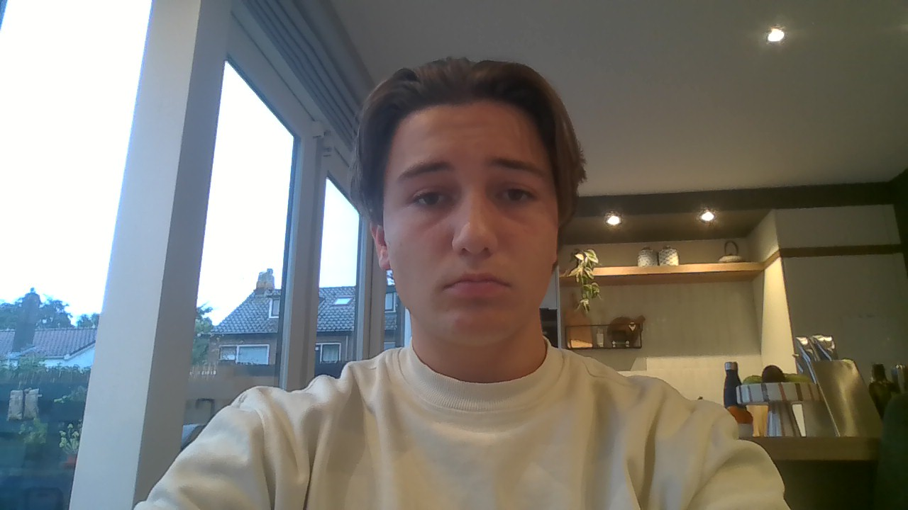

Welkom op mijn website! Hier vind je informatie over mij, AI en verschillende onderwerpen over computers, zoals invoer, verwerking en uitvoer, het binaire stelsel en kleurmodellen. Neem gerust een kijkje!

Hier komt jouw foto Upload je foto naar de map images en noem het bestand home.jpg.
Over mij
Wie ben ik?
Hoi! Ik ben Gijs. Ik ben 15 en ik woon in Voorschoten. Op deze pagina vertel ik wat meer over mezelf, mijn karakter en mijn doelen.
Wie ik ben
Ik ben sociaal, behulpzaam en hou ervan om lol te maken. Ik heb een gezin met mijn ouders en mijn zusje. Ik zit op het Vlietland College en probeer op school mijn best te doen. Verder vind ik het belangrijk om mezelf te zijn en plezier te hebben met anderen.
Mijn eigenschappen
Ik ben behulpzaam, sociaal en heb best veel humor. Ik vind het leuk om met vrienden te zijn en grapjes te maken. Ook ben ik eerlijk en help ik anderen als dat nodig is. Ik hou ervan om gewoon mezelf te zijn en lol te maken.
Mijn doelen
Later wil ik een leuke baan hebben waarmee ik goed geld kan verdienen. Ik wil succesvol worden en iets bereiken waar ik trots op kan zijn. Ook wil ik later veel leuke dingen doen met mijn vrienden en familie en mooie plekken bezoeken. Ik weet nog niet precies wat ik later wil worden.
Invoer - verwerking - uitvoer
Hoe werkt een computersysteem?
Een computersysteem werkt vaak in drie stappen: invoer, verwerking en uitvoer. De computer krijgt eerst gegevens binnen, verwerkt die gegevens en geeft daarna een resultaat.
Invoer
Invoer is alles wat je in een computer stopt. Dat kan bijvoorbeeld tekst zijn die je typt, een klik met je muis, een foto die je uploadt of geluid via een microfoon.
Voorbeelden: toetsenbord, muis, microfoon en scanner.
Verwerking
Bij verwerking voert de computer opdrachten uit met de ingevoerde gegevens. De processor voert berekeningen uit en programma's bepalen wat er met de gegevens gebeurt.
Voorbeeld: een rekenmachine berekent de som die je invoert.
Uitvoer
Uitvoer is het resultaat dat de computer teruggeeft. Dat kan beeld, geluid, tekst of een afgedrukt document zijn.
Voorbeelden: beeldscherm, luidsprekers en printer.
Binair stelsel
Hoe computers met nullen en enen werken
Computers gebruiken het binaire stelsel om gegevens op te slaan en te verwerken. In plaats van tien cijfers (0 tot en met 9), gebruikt het binaire stelsel maar twee cijfers: 0 en 1. Elk cijfer heet een bit.
Een bit is een 0 of een 1. Een byte bestaat meestal uit 8 bits. Met 8 bits zijn er 256 mogelijke combinaties, van 00000000 tot en met 11111111.
Hoe tel je binair?
Elke plek heeft een waarde die een macht van 2 is: 1, 2, 4, 8, 16, enzovoort. Je telt de waarden op waar een 1 staat.
Voorbeeld: 1010 = 8 + 2 = 10 in het gewone tientallig stelsel.
Waarom gebruikt een computer dit?
Elektronica kan goed twee toestanden herkennen, bijvoorbeeld aan of uit. Die toestanden worden weergegeven als 1 en 0. Tekst, foto's en geluid kunnen allemaal als binaire gegevens worden opgeslagen.
Kleurmodellen
Hoe een computer kleuren weergeeft
Kleurmodellen leggen vast hoe kleuren worden samengesteld. Welke methode wordt gebruikt, hangt bijvoorbeeld af van of je naar een scherm kijkt of iets afdrukt.
RGB
RGB staat voor rood, groen en blauw. Schermen mengen deze drie kleuren licht om andere kleuren te maken. Als rood, groen en blauw allemaal maximaal staan, krijg je wit. Als ze allemaal uitstaan, krijg je zwart.
Voorbeeld: RGB(255, 0, 0) is rood.
CMYK
CMYK staat voor cyaan, magenta, geel en zwart. Dit kleurmodel wordt vooral gebruikt bij printen. De kleuren worden met inkt op papier aangebracht.
RGB of CMYK?
RGB wordt vooral gebruikt voor beeldschermen, telefoons en digitale afbeeldingen. CMYK wordt vooral gebruikt voor drukwerk, zoals posters en folders.
Kunstmatige intelligentie
Mijn interesse in AI
Mijn interesse in AI is hoe het zit in games en hoe het wordt geprogrameerd.
Wat is AI?
AI betekent kunstmatige intelligentie. Het is technologie waarmee computers taken uitvoeren waarvoor normaal menselijke intelligentie nodig is. Je komt AI dagelijks tegen, bijvoorbeeld op TikTok, Spotify, Siri, navigatie-apps en ChatGPT. AI helpt om informatie te vinden en taken makkelijker te maken. Toch kan AI fouten maken, dus controleer belangrijke informatie altijd goed.
Waar gebruik ik het voor?
Ik gebruik vooral AI om afbeeldingen te maken en informatie te krijgen.
Mijn mening
De mening die ik heb over AI is dat het een enorm goeie uitvinding is, maar een aandachtspunt is wel dat door AI er veel water opraakt en dat er soms valse info wordt gedeeld.